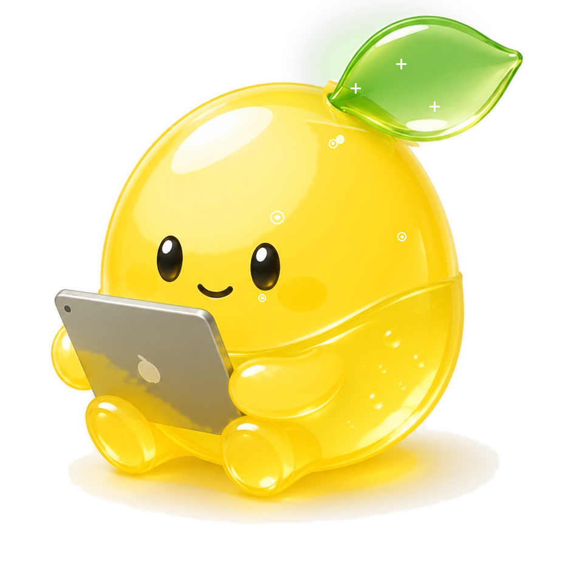

iOS · CAMERA
한 번에 여러 라벨도 찍을 수 있어요.
iOS 26 카메라 UX를 그대로 따른 라이브 뷰파인더. 라벨 자동 인식 가이드 안에 제품을 맞추기만 하면 됩니다.
단일 · 다중 모드 전환 (상단 노란 캡슐)
플래시 off · on · auto
다중 모드: "방금 찍은 N장" 트레이 + 확인 액션
왼쪽 썸네일 탭 → 사진 라이브러리
완료 → mascot 5-step 분석 화면
9:41
Label · 자동 인식 중
라벨 전체가 사각형 안에 들어오도록 맞춰 주세요
다중 · 2장
방금 찍은 2장
1
×
2
×
확인 (2)
단일
다중

2